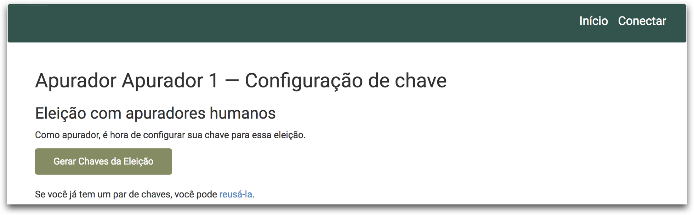
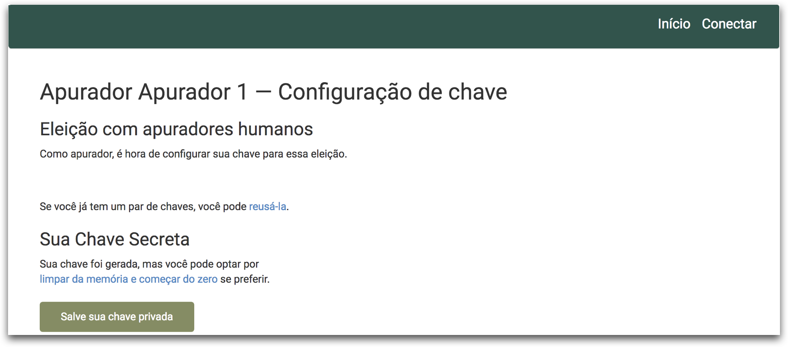
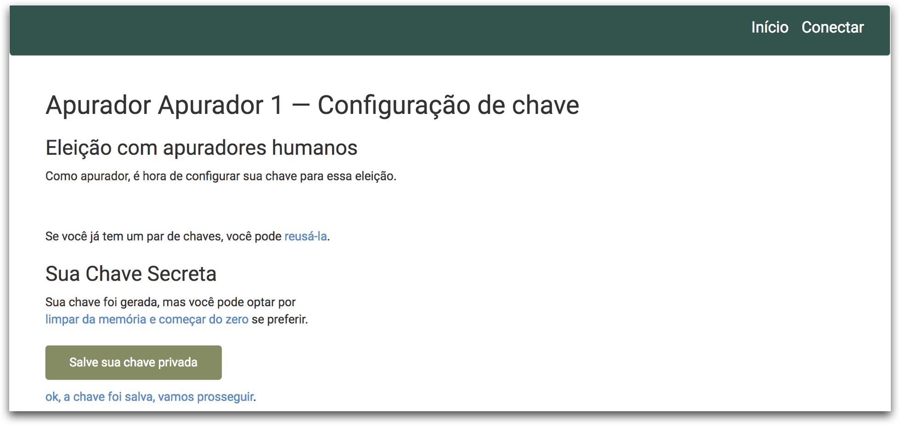

Gestor - Como gerar chave do apurador
Ao ser designada como um Apurador, a pessoa receberá um e mail do Sistema de Votação Helios com as instrução e um link para que essa possa gerar ou carregar sua chave privada. A pessoa deve obrigatoriamente entrar no link que está no e-mail para que possa carregar suas informações de apurador.
ATENÇÃO: O apurador deve manter esse e-mail, pois a URL contida nele deverá ser usada novamente para que se possa apurar a eleição.
-
Após clicar no link que recebeu por e-mail, clique no botão configurar chave de apurador.

-
Clique no botão Gerar Chaves da Eleição.

-
Clique no botão Salve sua chave privada. Será aberta uma nova aba no navegador com uma sequência numérica grande. Clique no meu arquivo do navegador e escolha a opção Salvar.
- Escolha o local onde o arquivo será salvo e coloque o nome que desejar para o arquivo, mas deixe a extensão como txt. Por exemplo, minha-chave-privada.txt. Clique no botão salvar e pode fechar essa janela ou aba.
- Salve esse arquivo em um local seguro, pois ele será necessário no momento da apuração.

-
Clique no link ok, a chave foi salva, vamos prosseguir.

-
Por fim, clique no botão Carregar sua chave pública.

-
Parabéns, você carregou a chave com sucesso! Se desejar, você pode fazer um teste a fim de verificar se possui a chave privada correta, basta clicar no botão verificar se você tem a chave privada correta. Esse passo é opcional.